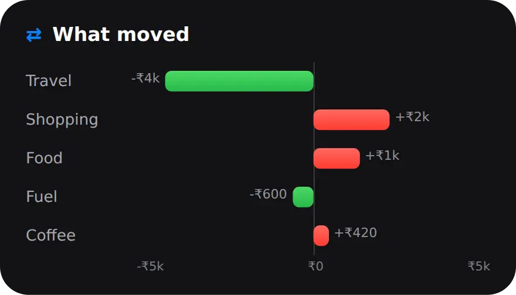

Why review your budget once a month?
Because a month is long enough to show a pattern and short enough to fix it. A weekly check is mostly noise, and a yearly one comes too late to change anything.
Most months have the same shape: salary in, rent and EMIs out, then hundreds of small UPI payments that are easy to forget. A review turns them into something you can act on. It answers four questions: How much did I spend? How much did I keep? What changed? What will I do differently next month?
Pick a fixed day, such as the third or fourth of the month, so late entries and card bills have landed. Then the numbers you look at are complete.
How do I do a monthly budget review in 10 minutes?
Open the Stats tab, step back to last month, and read it top to bottom. The cards are in the order of the review. Five steps:
- Open last month in Stats. Open the Stats tab, keep Month selected, and tap the back arrow once. On a finished month the verdict card sits at the top. (1 minute)
- Read the verdict. Note what you spent, the share of your income you saved, and the arrows on the Income and Spent tiles, which compare with the month before. (2 minutes)
- Check the trend. The Trends card plots income, spending and savings rate over seven months, so you can see whether this month fits the pattern. (1 minute)
- See what moved. The What moved card shows up to five categories with the biggest change versus the month before. Red went up, green went down. Decide which changes you planned. (3 minutes)
- Plan next month. Tap Money Score for your biggest opportunities, then open Manage, Limits and adjust your total and category limits for the month ahead. (3 minutes)
On the current month the Stats tab opens with Insights instead, such as which category leads so far or whether you are on pace to spend more than last month. Those are for checking in during the month. The review works best on a month that has finished.
What does the Stats verdict tell me?
One sentence and one number for the month: what you spent, and the share of your income you saved.
In the example above it reads "Spent ₹38,420, saved 24% of what you earned." The badge beside the amount is the savings-rate band MoneyOS uses:
- Excellent at 30% or more of income saved.
- Good from 20%.
- Fair from 10%.
- Needs attention below 10%.
The Income and Spent tiles carry small arrows that compare with the month before. Once a year has at least three finished months, the sentence can also rank the month, for example "your best month for saving this year". The month in progress is never ranked, because a half-finished month always looks lean next to full ones.
The spending figure leaves out payments linked to investments, so a SIP does not count as spending. If you have not logged income, the card shows spending only, with no rate and no badge.
How do I see which categories changed?
Scroll to What moved. It shows the categories with the biggest change versus the month before, up to five, as bars either side of zero.

A line under the chart names the single biggest change and the amount. This is the most useful minute of the review. For each red bar, ask one question: did I plan this? A birthday gift in Shopping is fine. Food creeping up for the third month in a row is worth a limit. To see which days the money went, use the spending heat map.
What is the Money Score, and how is it worked out?
A number from 0 to 100 built from six parts of your finances, with a fixed formula. Tap the Money Score row on the verdict card to see the breakdown.
- Savings rate, 25 points. Full marks at 30% saved.
- Emergency fund, 20 points. Full marks at six months of essential spending.
- Debt load, 20 points. Lower debt payments against income score higher.
- Budget discipline, 15 points. How many months you stayed within budget.
- Income stability, 10 points. How steady your income is month to month.
- Investment consistency, 10 points. How many months you invested.
Biggest opportunities lists the three parts where you are leaving the most points behind. That is your shortlist for next month. The score unlocks once you have logged income and have 30 days of history. Emergency fund, debt and budget adherence can be set by hand from the sliders button, since some of it, such as savings held elsewhere, is not in your transactions.

What should I change for next month?
One or two things, not ten. Usually a limit for the category that grew, or a new total that matches what the month really cost.
Open Manage, then Limits. If What moved showed Food up again, give Food its own monthly limit, and MoneyOS will nudge you at 80% and 100%. If the total limit felt out of reach, reset it from your salary with the safe daily limit method. To keep the new limit in sight, put it on your Lock Screen.
Once a year, switch Stats from Month to Year for the bigger picture: month by month totals, top categories, a heat map of the whole year and a short story of the year. Everything on Stats is worked out on your iPhone, and nothing is sent anywhere. Read more about what stays on your phone.
Frequently asked questions
How often should I review my budget?
Once a month is enough for most people, a few days after the month ends, when every payment has been logged. A quick look at Home during the month tells you if you are on pace. The monthly review is where you decide what to change.
What should a monthly budget review include?
Four things: how much you spent, how much of your income you saved, which categories changed versus the month before, and what you will change next month, such as a limit for the category that grew.
What does the Good badge on the Stats verdict mean?
It is the savings-rate band for the month. MoneyOS shows Excellent at 30% or more of income saved, Good from 20%, Fair from 10% and Needs attention below 10%. It appears only when you have logged income.
Why can't I see a Money Score yet?
The Money Score unlocks once you have logged some income and have at least 30 days of history. Before that, savings rate and stability would be guesses, so MoneyOS shows no number rather than a misleading one.
Do SIPs count as spending in the monthly review?
No. Payments linked to an investment, such as a SIP, are left out of the spending figures on Stats, so saving more never looks like spending more.
Is MoneyOS free?
Yes. The whole app is free, with no subscription, no ads and no in-app purchases. There is no account and no bank login, and the review is worked out on your iPhone.